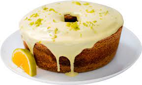

Bolo de Laranja

Bolo de Laranja
- Resuminho
- Um bolo simples e fácil de preparar, com ingredientes que estão sempre em conta!
A cobertura é essencial para deixar um gostinho mais delicioso!
- Autor: Gabriel
- Tempo de Preparo: Até 2h
- Serve: 12 Fatias
Para a Massa
Ingredientes
- 2 laranjas pêra
- 2 ovos
- 1 xícara (chá) de óleo
- 1 ½ xícara (chá) de açúcar
- 2 xícaras (chá) de farinha de trigo
- 2 colheres (chá) de fermento em pó
- manteiga e farinha de trigo para untar e polvilhar a fôrma
Modo de Preparo
- Preaqueça o forno a 180 °C (temperatura média). Com um pedaço de papel toalha, unte
com manteiga uma fôrma com furo no meio de 24 cm de diâmetro – espalhe uma
camada bem fina e uniforme. Polvilhe com farinha e chacoalhe bem para espalhar. Bata
sobre a pia para retirar o excesso.
- Descasque uma das laranjas (se não gosta de um sabor amargo-doce, descasque as duas).
Lave bem sob água corrente a casca da outra laranja, corte e descarte as pontas. Corte
as laranjas em quatro, no sentido do comprimento. Corte cada gomo em três pedaços,
descartando a fibra branca central e as sementes. Transfira os pedaços para o
liquidificador.
- Numa tigela pequena quebre um ovo de cada vez e transfira para o liquidificador – se um
estiver estragado você não perde a receita. Junte o óleo, o açúcar e bata bem até ficar
liso.
- Numa tigela média, misture a farinha com o fermento em pó.
- Transfira a laranja batida com os líquidos para uma tigela grande e acrescente a farinha
com o fermento aos poucos, passando pela peneira. Misture delicadamente com o
batedor de arame a cada adição para incorporar.
- Transfira a massa do bolo para a fôrma e leve ao forno para assar por cerca de 50
minutos. Para verificar se o bolo está pronto: espete um palito na massa, se sair limpo
pode retirar do forno; caso contrário, deixe por mais alguns minutos, até que asse
completamente.
- Retire o bolo do forno e deixe esfriar por 30 minutos antes de desenformar – cuidado, o
bolo pode rachar se estiver quente ao ser desenformado. Cubra a fôrma com um prato e
vire de uma só vez para desenformar. Atenção: o bolo deve estar completamente frio
antes de cobrir com o glacê.
Para o Glacê e Decoração
Ingredientes
- 1 xícara (chá) de açúcar de confeiteiro
- 1 ½ colher (sopa) de caldo de laranja coado
- 20 flores de mel comestíveis para decorar
- 3 pedaços de casca de laranja cristalizada para decorar
Modo de Preparo
- Antes de preparar o glacê, corte a base do cabinho das flores de mel e separe os ramos
em 2 buquês menores (assim a decoração fica mais delicada). Corte a casca de laranja
cristalizada em pedaços pequenos, de cerca de 0,5 cm.
- Sobre uma tigela, passe o açúcar de confeiteiro pela peneira – assim é mais fácil de dar o
ponto no glacê e ele fica bem lisinho.
- Adicione 1 colher (sopa) do caldo de laranja e misture bem. Vá adicionando o restante do
caldo aos poucos, até dar o ponto – a quantidade de líquido total usada na receita pode
variar de acordo com a marca do açúcar de confeiteiro e até a umidade do ar. Mexa bem
a cada adição, no início pode parecer que está muito duro, mas é assim mesmo. A textura
deve ser de uma pasta grossa.
- Leve a tigela ao micro-ondas para rodar por 15 segundos, em potência média – dessa
forma o glacê fica fluido sem ser diluído, ideal para ser aplicado no bolo. O resultado é
aquela cobertura branquinha perfeita que não escorre totalmente. Retire do micro-
ondas e mexa bem. Volte ao micro-ondas para rodar em etapas de 5 segundos extras até
atingir a consistência de uma gemada – ao levantar uma porção da colher o glacê não
deve afundar rapidamente no restante da tigela.
- Com uma concha vá derramando o glacê sobre o bolo aos poucos, para que caia de
maneira uniforme cobrindo o topo e parte da lateral do bolo.
- Disponha as flores e os pedaços de casca de laranja sobre o glacê ainda úmido e deixe
secar completamente antes de servir – isso leva cerca de 20 minutos.
OBS:você pode decorar o bolo com rodelas de laranja desidratada cortada em pedaços,
folhas de louro ou apenas raspas de laranja. O bolo pode ser decorado com o glacê até um
dia antes de servir, mas as flores comestíveis perdem o viço de um dia para o outro.
Sabor Extra
Para dar mais uma camada de sabor você pode adicionar ¼ de colher (chá) de água de flor de
laranjeira ao glacê.
- Autor: Gabriel
- Tempo de Preparo: Até 2h
- Serve: 12 Fatias
Veja outras receitas!!